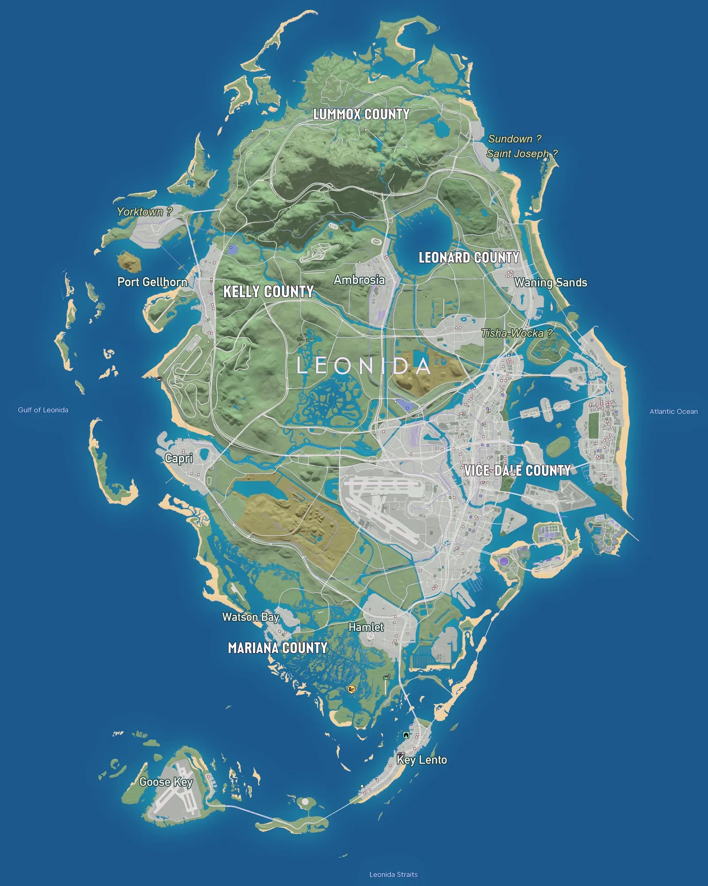

Vice City / 01
Interactive
Map
Explore the current Vice City map, including counties, roads, islands and points of interest. More interactive markers will be added as details are verified.

Vice City / 01
Explore the current Vice City map, including counties, roads, islands and points of interest. More interactive markers will be added as details are verified.
